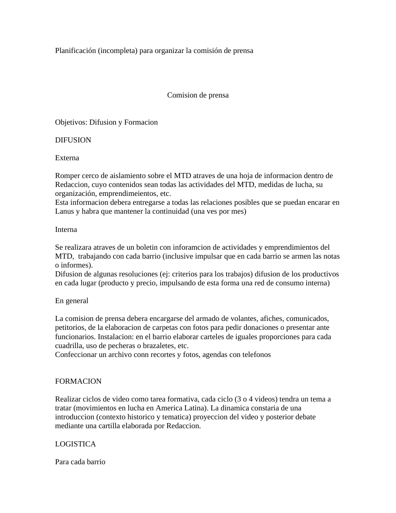

Primera hoja de planificación para la comisión de prensa.doc. Clic en la imagen para abrir o descargar el archivo original.·21.5 KB·2 hojas, la imagen muestra la primera

Planificación (incompleta) para organizar la comisión de prensa
Comision de prensa
Objetivos: Difusion y Formacion
Externa
Romper cerco de aislamiento sobre el MTD atraves de una hoja de informacion dentro de Redaccion, cuyo contenidos sean todas las actividades del MTD, medidas de lucha, su organización, emprendimeientos, etc.
Esta informacion debera entregarse a todas las relaciones posibles que se puedan encarar en Lanus y habra que mantener la continuidad (una ves por mes)
Interna
Se realizara atraves de un boletin con inforamcion de actividades y emprendimientos del MTD, trabajando con cada barrio (inclusive impulsar que en cada barrio se armen las notas o informes).
Difusion de algunas resoluciones (ej: criterios para los trabajos) difusion de los productivos en cada lugar (producto y precio, impulsando de esta forma una red de consumo interna)
En general
La comision de prensa debera encargarse del armado de volantes, afiches, comunicados, petitorios, de la elaboracion de carpetas con fotos para pedir donaciones o presentar ante funcionarios. Instalacion: en el barrio elaborar carteles de iguales proporciones para cada cuadrilla, uso de pecheras o brazaletes, etc.
Confeccionar un archivo conn recortes y fotos, agendas con telefonos
Realizar ciclos de video como tarea formativa, cada ciclo (3 o 4 videos) tendra un tema a tratar (movimientos en lucha en America Latina). La dinamica constaria de una introduccion (contexto historico y tematica) proyeccion del video y posterior debate mediante una cartilla elaborada por Redaccion.
Para cada barrio
Conseguir lugar, tele y video para los ciclos de video.
En general: conseguir grabador para reportajes, averiguar sobre una filmadora
Contamos con un correo electronico local (pablo) y uno de afuera (celina), camara de fotos y computadora
Dado que esta integrada por compañeros del barrio y de afuera, prensa tendra un manejo prticualar
Las compañeras de afuera tendra una funcion mas politica en la planificacion, elaboracion de cartillas o notas, llevar adelante una discusión, etc. Las tareas concretas podran realizarlas aprovechando los dias que esten presentes, tambien esto es de importacia, ya que deben vinncularse con los compañeros del barrio.
Compañeros del barrio: ya estan incorporados compañeros de dos barrios, (faltaria urquiza).
Las tareas de estos compañeros seran las de organizar, convocar, difundir, etc, cada actividad de prensa en su barrio.
Las reuniones seran semanales (definir fechas y horario) donde se planificara y organizara todas las actividades.
Transcripción del documento original planificación para la comisión de prensa.doc. Se conserva la ortografía del original.